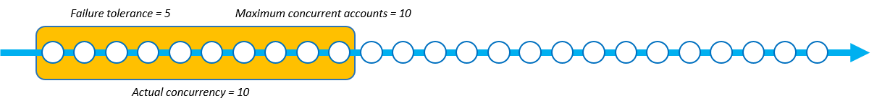

并发模式参数
并发模式是 StackSetOperationPreferences 的参数，允许您选择并发级别在堆栈集操作期间的行为方式。您可以在以下模式之间进行选择：
-
严格容错：此选项可动态降低并发级别，确保失败账户的数量永远不会超过容错值 +1。初始实际并发数设置为最大并发账户数值或容错值 +1 中的较小值。然后，实际并发数按失败次数成比例减少。这是默认行为。
-
软容错：此选项将容错与实际并发数分离。这允许堆栈集操作在最大并发账户数值设置的并发级别上运行，而不管失败次数是多少。
严格容错会降低堆栈集操作失败时的部署速度，因为每次失败都会降低并发数。软容错优先考虑部署速度，同时仍能利用 AWS CloudFormation 安全功能。这可以让您查看和解决堆栈集操作失败的常见问题，例如与现有资源、服务限额和权限有关的问题。
有关 StackSets 堆栈操作失败的更多信息，请参阅 堆栈操作失败的常见原因。
有关最大并发账户数和容错的更多信息，请参阅 堆栈集操作选项。
每种并发模式的工作原理
下图直观地显示了每种并发模式在堆栈集操作期间的工作原理。节点字符串表示对单个 AWS 区域 的部署，且每个节点都是一个目标 AWS 账户。
- 严格容错
-
当使用严格容错的堆栈集操作将容错值设置为 5，最大并发账户数的值设置为 10 时，实际并发数为 6。实际并发数为 6，因为 5+1 的容错值低于最大并发账户数的值。
下图显示了容错值对最大并发账户数值的影响，以及它们对堆栈集操作实际并发数的影响：
当部署开始且出现失败的堆栈实例时，为了提供安全的部署体验，实际并发数会降低。当 StackSets 部署 1 个堆栈实例失败时，实际并发数从 6 个降低到 5 个。


严格容错模式按失败堆栈实例的数量成比例降低实际并发数。在以下示例中，当 StackSets 再部署的 2 个堆栈实例失败时，实际并发数从 5 个减少到 3 个，从而使失败的堆栈实例总数降至 3 个。

当失败的堆栈实例数等于定义的容错值 +1 时，StackSets 的堆栈集操作失败。在以下示例中，当有 6 个失败的堆栈实例且容错值为 5 时，StackSets 操作失败。

在此示例中，StackSets 在停止堆栈集操作之前部署了 9 个堆栈实例（3 个成功，6 个失败）。
- 软容错
-
当使用软容错的堆栈集操作将容错值设置为 5，最大并发账户数的值设置为 10 时，实际并发数为 10。
当部署开始且出现失败的堆栈实例时，实际并发数不会改变。在以下示例中，1 个堆栈操作失败，但实际并发数仍为 10。

即使再有 2 个堆栈实例失败，实际并发数仍保持在 10。

当失败的堆栈实例超过容错值时，StackSets 的堆栈集操作失败。在以下示例中，当有 6 个失败的堆栈实例且容错计数为 5 时，StackSets 操作失败。不过，在并发队列中的其余操作完成之前，操作不会结束。
StackSets 继续部署已在并发队列中的堆栈实例。这意味着失败的堆栈实例的数量可能高于容错。在以下示例中，有 8 个失败的堆栈实例，因为尽管堆栈集操作的容错已达到 5，但并发队列仍有 7 个操作要执行。
在此示例中，StackSets 在停止堆栈操作之前部署了 15 个堆栈实例（7 个成功，8 个失败）。
根据部署速度在“严格容错”和“软容错”之间进行选择
在严格容错模式和软容错模式之间进行选择，具体取决于堆栈集部署的首选速度以及允许的部署失败次数。
下表显示了每种并发模式如何处理在尝试部署总共 1000 个堆栈实例时失败的堆栈集操作。在每种情况下，容错的值设置为 100 个堆栈实例，最大并发账户数的值设置为 250 个堆栈实例。
虽然 StackSets 实际上以滑动窗口的形式对账户进行排队（参阅 每种并发模式的工作原理），但此示例通过分批显示操作的方式来演示每种模式的速度。
严格容错
这个示例使用严格容错模式，相对于前面每个批次中发生的失败数量，降低了实际并发数。每个批次有 20 个失败的实例，这会将下一个批次的实际并发数降低 20，直到堆栈集操作的容错值达到 100。
在下表中，第一批的初始实际并发数为 101 个堆栈实例。实际并发数为 101，因为这是最大并发账户数（250）和容错（100）+1 中的较低值。每个批次包含 20 个失败的堆栈实例部署，这会使后续每个批次的实际并发数降低 20 个堆栈实例。
| 严格容错 | 第 1 批 | 第 2 批 | 第 3 批 | 第 4 批 | 第 5 批 | 第 6 批 |
|---|---|---|---|---|---|---|
| 实际并发数 | 101 | 81 | 61 | 41 | 21 | - |
| 失败的实例数 | 20 | 20 | 20 | 20 | 20 | - |
| 成功的堆栈实例数 | 81 | 61 | 41 | 21 | 1 | - |
当堆栈集操作达到 100 个堆栈实例的容错时，使用严格容错的操作分五批完成了 305 个堆栈实例部署。堆栈集操作在失败之前成功部署了 205 个堆栈实例。
软容错
此示例使用软容错模式，无论失败实例的数量如何，都将保持相同的实际并发数，该值由 250 个堆栈实例的最大并发账户值定义。在达到 100 个实例的容错值之前，堆栈集操作会保持相同的实际并发数。
在下表中，第一批的初始实际并发数为 250 个堆栈实例。实际并发数为 250，因为最大并发账户数的值设置为 250，且软容错模式允许 StackSets 使用此值作为实际并发数，不管失败数量是多少。虽然此示例的每个批次中都有 50 个失败的操作，但实际并发数仍不受影响。
| 软容错 | 第 1 批 | 第 2 批 | 第 3 批 | 第 4 批 | 第 5 批 | 第 6 批 |
|---|---|---|---|---|---|---|
| 实际并发数 | 250 | 250 | - | - | - | - |
| 失败的实例数 | 50 | 50 | - | - | - | - |
| 成功的堆栈实例数 | 200 | 200 | - | - | - | - |
通过相同的最大并发账户值和容错值，使用软容错模式的操作分两批完成了 500 个堆栈实例部署。堆栈集操作在失败之前成功部署了 400 个堆栈实例。
使用 AWS Management Console 选择并发模式
您可以在设置部署选项页面上为现有或新堆栈集选择并发模式。
有关使用 AWS Management Console 创建新堆栈集的更多信息，请参阅 创建堆栈集。
有关使用 AWS Management Console 更新现有堆栈集的更多信息，请参阅 使用 AWS CloudFormation 控制台更新堆栈集。
有关使用 AWS Management Console 删除堆栈集的更多信息，请参阅 使用 AWS Management Console删除堆栈集。
使用 AWS Command Line Interface 选择并发模式
您可以通过以下 StackSets 命令使用 ConcurrencyMode 参数：
这些命令有一个名为 --operation-preferences 的现有参数，可以使用 ConcurrencyMode 设置。ConcurrencyMode 可以设置为以下任一值：
-
STRICT_FAILURE_TOLERANCE -
SOFT_FAILURE_TOLERANCE
以下示例使用 STRICT_FAILURE_TOLERANCE ConcurrencyMode 创建堆栈实例，FailureToleranceCount 设置为 10，MaxConcurrentCount 设置为 5：
aws cloudformation create-stack-instances \ --stack-set-nameexample-stackset\ --accounts123456789012\ --regionseu-west-1\ --operation-preferences ConcurrencyMode=STRICT_FAILURE_TOLERANCE,FailureToleranceCount=10,MaxConcurrentCount=5
有关使用 AWS Command Line Interface（CLI）创建新堆栈集的更多信息，请参阅 创建堆栈集。
有关使用 AWS CLI 更新现有堆栈集的更多信息，请参阅 使用 AWS CLI 更新您的堆栈集。
有关使用 AWS CLI 删除堆栈集的更多信息，请参阅 使用 AWS CLI删除堆栈集。